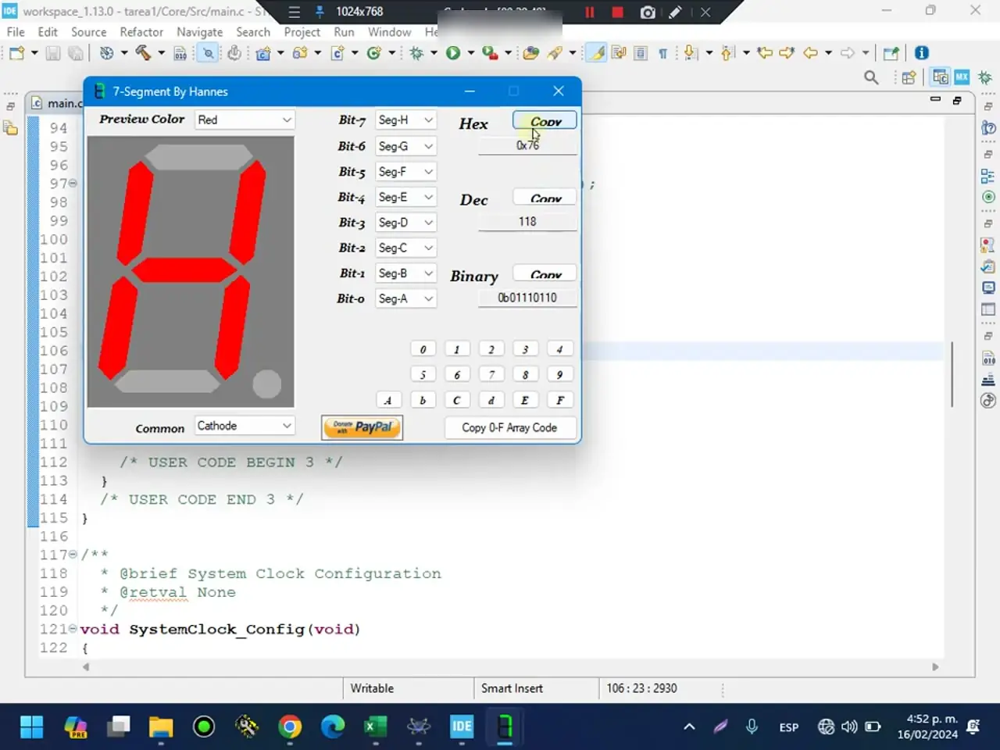

En Proteus reemplaza el STM32F401CC por la tarjeta BLACKPILL_ARZ (librería de la tarea anterior).
Los puertos quedan a un lado de la tarjeta: selecciónala y usa espejo en X o Y para dejar los pines hacia el display.
Tercera clase del semestre 2024-I. Se reemplaza el micro por la tarjeta BLACKPILL_ARZ en Proteus y se corrige el error de VDDA con Configure Power Rails a 3.3 V. Luego se busca el registro GPIOx_ODR en el manual de referencia y se usa para sacar un dígito completo en una sola línea, pensando en binario o hexadecimal. Con una herramienta de 7 segmentos se calcula la palabra HOLA y se encapsula en un procedimiento. Al final se explican los operadores OR, AND y XOR para encender, apagar o invertir pines sin afectar el resto del puerto.

En Proteus reemplaza el STM32F401CC por la tarjeta BLACKPILL_ARZ (librería de la tarea anterior).
Los puertos quedan a un lado de la tarjeta: selecciónala y usa espejo en X o Y para dejar los pines hacia el display.
Si no logras alinear los pines, en el menú View cambia el Snap (por defecto 50 th) a 10 th: el movimiento se vuelve mucho más fino.
Al dar Play aparece No power supply specified for net VDDA: la tarjeta tiene un pin VDDA que Proteus no sabe alimentar.
Sin corregir el Power Rail la simulación falla con error de netlist.
La librería también trae huella para PCB Layout y modelo 3D, útiles para el proyecto final (simulación, PCB, 3D y montaje real).
Ve a Design → Configure Power Rails.
En VCC/VDD pon 3.3 V (la Black Pill trabaja a 3.3 V, no a 5 V).
Selecciona VDDA en Unconnected power nets y pulsa Add para conectarlo a VCC/VDD. OK y Play.
Con HAL se escribe pin por pin (7 líneas para un dígito). Internamente el micro trabaja con puertos: si el display está en pines seguidos del mismo puerto, se puede escribir todo en una sola línea, ahorrando memoria y tiempo de procesamiento.
El datasheet (unas 120 páginas) da las características generales: qué puertos y periféricos tiene.
El Reference Manual (RM0368) (más de 800 páginas) explica los registros. No se lee completo: busca el capítulo de lo que necesitas, aquí el 8 General-purpose I/Os (GPIO), desde el índice o los marcadores.
En 8.4.6 GPIO port output data register (GPIOx_ODR): es de 32 bits, pero solo se usan los bits 0 a 15 (ODR0–ODR15), uno por pin del puerto.
Escribir un dato en ODR saca todos los pines del puerto al mismo tiempo.
Escribe el puerto (GPIOA), luego -> (guion y mayor que, sin espacios) y el autocompletado muestra todos los registros del puerto. Elige ODR.
GPIOA->ODR=0; apaga todo el display (cátodo común).
GPIOA->ODR = 0; // apaga todos los segmentosGPIOA->ODR=1; solo enciende el segmento A: el 1 decimal es el bit 0.
GPIOA->ODR=111; tampoco sirve: es ciento once en decimal.
Para configurar pines piensa en binario (0b1111111) o en hexadecimal agrupando de a 4 bits (0x7F). Para contar o sumar usa decimal.
GPIOA->ODR = 0b1111111; // los 7 segmentos encendidos
GPIOA->ODR = 0x7F; // lo mismo en hexadecimalUsa una herramienta de 7 segmentos (en clase 7-Segment by Hannes): ordena los bits según tu conexión (Seg-A en el bit 0), elige Cathode y dibuja la letra.
Te da el valor en hexadecimal, decimal y binario; cualquiera sirve porque el compilador lo convierte.
Saca cada letra con su código y un retardo entre ellas.
GPIOA->ODR = 0x76; // H
HAL_Delay(200);
GPIOA->ODR = 0b00111111; // O
HAL_Delay(200);
GPIOA->ODR = 56; // L
HAL_Delay(200);
GPIOA->ODR = 0x77; // A
HAL_Delay(200);Escríbelo arriba del main, entre USER CODE BEGIN 0 y USER CODE END 0.
Un procedimiento empieza con void (no retorna nada), luego el nombre y los paréntesis (vacíos, con void o con parámetros).
/* USER CODE BEGIN 0 */
void hola()
{
GPIOA->ODR = 0x76; HAL_Delay(200);
GPIOA->ODR = 0x3F; HAL_Delay(200);
GPIOA->ODR = 0x38; HAL_Delay(200);
GPIOA->ODR = 0x77; HAL_Delay(200);
}
/* USER CODE END 0 */Un procedimiento no hace nada hasta que el main lo llama: escribe su nombre con los paréntesis (hola();).
Ventajas: el código queda organizado y legible, y se ahorra memoria porque el bloque se define una sola vez.
while (1)
{
hola();
}Para el parcial: mínimo ocho procedimientos (mensajes en el display, juegos de luces con 4 LED y melodías) y llamar al menos seis desde el main.
Al escribir el ODR completo también cambias los pines que no usa el display. Para modificar solo algunos bits se usan operadores a nivel de bit: | (OR), & (AND), ^ (XOR) y ~ (NOT).
Haz OR del registro con un comodín: 1 en los bits que quieres encender y 0 en el resto. Los ceros no alteran nada.
Ejemplo de la casa: encender baño, sala y terraza sin tocar las demás luces.
GPIOA->ODR |= 0b00010110; // enciende solo los bits en 1Con AND el comodín lleva 1 en todo y 0 solo en lo que quieres apagar.
GPIOA->ODR &= ~0b00010110; // apaga solo esos bitsCon XOR el comodín lleva 1 en lo que quieres invertir: lo encendido se apaga y lo apagado se enciende.
Aplicar dos veces la misma llave XOR devuelve el dato original; por eso se usaba para cifrar mensajes sencillos.
GPIOA->ODR ^= 0b00010110; // invierte solo esos bitsTarea: multiplexar un display de 4 dígitos de 7 segmentos usando estos operadores (y, para quien quiera avanzar, el registro BSRR para escrituras atómicas).